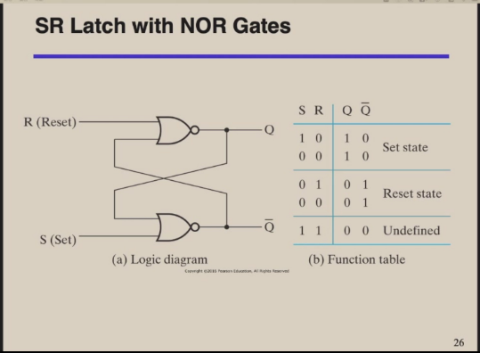
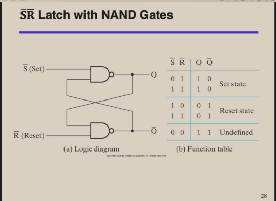
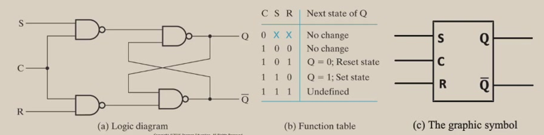
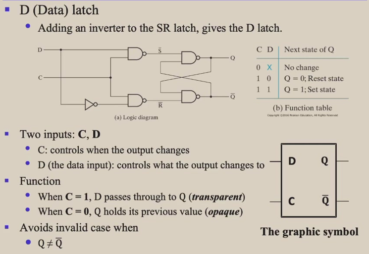

CSAPP
Abstract
本笔记参考《深入理解计算机系统》与《CSAPP》 章节参考原书与课堂内容表示
课堂内容
Rounding binary numbers:
- Binary Fractional Numbers
- "Even" when least significant bit is 0;
- "Half way" when bits to right of rounding position = $ 100.._{2} $
1.计算机系统漫游
- 三种数字表示:
- 无符号
- 补码（表示有符号的数字）
- 浮点数
- 溢出(overflow):
- 乘法的结合律是可行的:\(200*300*400*500 = -884907888\)
- 浮点运算是不可结合的:eg:\((3.14+1e20)-1e20 = 0.0\)而\(3.14+(1e20-1e20) = 3.14\)
2.信息的表示和处理
2.1 信息储存
- 虚拟内存(virtual memotry): 机器级程序将内存视为一个非常大的字节数组，称为虚拟内存
- 地址(address)： 内存的每个字节都由一个唯一的数字来标识，成为他的地址
- 虚拟地址空间(virtual address space)：所有可能地址的集合就成为虚拟地址空间
进制转换
- Decimal-十进制 Binary-二进制 Octal-八进制 Hexadecimal-16进制
- 转化为10进制：
- \((100101.01)_2 = (37.25)_{10}\)
- \((3A.CH) = (59.875)_{10}\)
- 10进制转化为其他进制(自己掌握计算方法):
- \((1350.6875)_{10} = (1000 0111)_2\)
- \(()_(10) = (0.1011)_2\)
- 8->2,16->2注意技巧
- \(2^{10}\) is kilo,denoted by K
- 二进制加减乘除(其实类似十进制)
2.1.1 十六进制表示法
- 一个字节有8位，值域\(0_{10} - 255_{10}\)
- \(x = 2^n\)时,\(n = i+4j\),所以开头的十六进制数字为\(1(i=0),2(i=1),4(i=2),8(i=3)\),后面跟随着j个十六进制的0
2.1.3 寻址和字节顺序
- 对象的地址为所使用字节中最小的地址
- 小端法(little endian): 最低有效字节在最前边的方式
- 大端法(big endian): 最高有效字节在最前边的方式(例子pg:29)
2.1.4
C语言字符串被编码为一个以null(值为0)字符结尾的字符数组,eg:"12345"->"31 32 33 34 35 00"
- ASCII码:"0" -> 32 "A" -> 65 "a" -> 97
2.1.4 布尔代数简介
- 非: ~ , 与: & , 或: | , 异或: ^
- 位级运算的一个常见用法是实现掩码运算,掩码\(0xFF\)表示一个字的低位字节,而其他的字节就被置为0。比如，对于\(x = 0x89ABCDEF\),\(x\&0xFF = 0x000000EF\)
2.2 整数表示
2.2.3 补码编码
- \(TMax_w = 2^{w-1}-1\)
2.2.6 扩展一个数字的位表示
- 无符号数:，在表头添加0，称为零扩展
- 补码数:在表示中添加最高有效位的值，称为符号扩展，eg: 101->1101->11101 都表示-3
2.2.7 截断数字
- 无符号数：截断k位 \(x_1 = xmod2^k\)
- 有符号数：截断k位 \(x_1 = xmod2^k\) if \(-2^{k-1}<=x<2^{k-1}\)
原码，反码，补码
示例用八位二进制的原码表示
原码: 最高位为符号位，0表示正数，1表示负数 * +1 = 0000 0001 * -1 = 1000 0001 反码: 正数的反码是其原码本身，负数的反码是在原码的基础上，符号位不变，其余位取反 * +1 = 0000 0001 * -1 = 1111 1110 补码: 正数的补码是其原码本身，负数的补码是在原码的基础上，符号位不变，其余位取反后加1 * +1 = 0000 0001 * -1 = 1111 1111
补码->原码 * If is a negative number,then invert the bits of value part,and add 1 to the result.
计算机实际只存储补码，-128的补码是[1000 0000],所以八位的二进制数存储范围是[-128,127]
The machine code before and after the conversion is unchanged,but reinterpreted.
- Logical operators in C alwats return 0 or 1 (&& || !)
!0x41 -> 0x00!0x00 -> 0x01- In C,int is cast to unsigned!
- Sign Extension:
- Make k copies of sign bit
- $ X' = x_{w-1},x_{w-1}.......x_{w-1},x_{w-2}....,x_{0} $
2.3 Interger Arithmetic(整数运算)
2.3.1 Unsigned Addition
此处过于繁琐,未来删减
- if $ x + y_{u} > 2^{w+1} $ , $ x + y_{u} = x+y - 2^w $
- Detecting overflow: $ s = x+y_{u} $ if $ s < x $ or $ s < y $, then the computation of s overflowed
- Unsigned negation:$ -x_w = 2^w-x $ if $ x > 0 $
2.3.2 Two's-Complement Addition
此处过于繁琐,未来删减
- Detecting positive overflow: x>0,y>0 but s<0
- Detecting negative overflow: x<0,y<0 but s>0
- Two's-Complement Negateion:
2.3.6 Multiplying by Constants
- Mutiply非常耗费时间,所以通常转化为与2相乘然后进行移位操作.例如$ 14 = 2^{3} + 2^{2} + 2 \(,所以\) x * 14 = x2^{3} + x * 2^{2} + x2 $ or ${x * 14 = x2^{4} - x2} $
- 乘以$ 2_{w} $ 相当于左移w位
2.3.7 Dividing by Power of 2
- Division is slower than Multiplication
- 对于任意常数，我们无法将其简单地转为除以多个2的幂次相加的情况,因为除法有舍入的问题(小数点舍去),如果将其简单的分解为多个数相除，那么小数的部分将会全部被舍去，这将会导致最终的结果与我们所预期的相差过大,
- 除以$ 2^{w} $相当于右移w位:
- Unsigned:$ [x_{w-1},x_{w-2},.....,x_{0}] -> [0,0,0,x_{w-1},...x_{0}]$
- Signed: $ [x_{w-1},....,x_{0}] -> [x{w-1},x_{w-1},x_{w-1},x_{w-1},...,x_{0}]$
2.4 Floating Point
2.4.1 Fractional Binary Numbers
- Fractional binary numbers notation can only representation numbers that can be written $ x*2^{y} $.For example $ \frac{1}{5} $ canot be represented exactly in binary,so it is an approximation.
2.4.2 IEEE Floating-Point Representation
$ V = (-1)^{s}M2^{E} $ * single precision: 32 bits * 1 bit for sign S * 8 bits for exponent E * 23 bits for fraction M * double precision: 64 bits * 1 bit for sign S * 11 bits for exponent E * 52 bits for fraction M
规格化的值:
exp的位模式不全为0,也不全为1时.以偏置(bias)形式表示,阶码的值$ E=exp-bias $ ,其中$ bias $ 是$ 2^{k-1}-1 \(,k是E的位数.尾数\) M=1+f $
非规格化:
- 阶码全为0,尾数不为0,表示的是一个非常接近0的数,这种情况下尾数$ M=f $
特殊值:
阶码全为1,尾数全为0,表示的是无穷大. 阶码全为1,尾数不为0,表示的是NaN(Not a Number)
2.4.4 Rounding(舍入)
向偶数舍入(round to even): 保证了舍入后的结果是最接近原始值的.The least significant digit of the result is evev.Thus it rounds $1.50 and $2.50 to $2 向零舍入(round toward zero): 舍入结果总是向0靠拢
2.4.5 Floating-Point Operations
计算不是一定精准的！ * $(3.14 + 1e10) - 1e-10 = 0 $ ,because value 3.14 is lost due to rounding * \(1e10 * 1e10 * 1e-10 = 正无穷\) while \(1e10 *(1e10*1e-10) = 1e10\) * \(1e20 * 1e20 - 1e20 * 1e20 = NaN\)
2.4.6 Floating-Point in C
- Conversions/Casting
- Casting between int,float,duble changes bit representation,and the underlying bit partten is not changed
-
double/float -> int
- Truncates fractional bit
- Like rouding toward zero
-
\(x * x\) can be a negative number,because the overflow
3.Machine-Level Representation of Programs
3.2 Program Encodings
linux> gcc -Og -o p p1.c p2.c -Og表示优化等级，-o表示输出文件名
The gcc command invokes an entire sequence of programs to turn the source code into executable code. 1. C Preprocessor(预处理) expands the source code to include any files spcified with #include commands and to expand any macros(宏) 2. The compiler generates assembly code versions of the two source files having names p1.s and p2.s 3. assembler(汇编器) converts the assembly code into binary object-code files(目标代码文件) p1.o and p2.o
The object code is one form of machine code-it contains binary representations of all the instructions,but the addresses of global values are not yet filled in.
- The linker(链接器) merges these two object-code files along with code implementing library functions(eg:printf) to produce the executable file p
Executable code is the second form of machine code.It is the exact form of code that is executed by the processor
3.2.1 Machine-Level Code
assembly code makes no difference between signed and unsigned numbers,between different type of pointers,between pointer and integer.
at any given time,only limited subrange of virtual memory are considered valid.Now,the upper 16 bits must be set to zero,so an address is potentially specified a byte over \(2^{48}\)
The operating system manages this virtual address space,translating virtual addresses into physical addresses of values in the actual processor memory.
3.2.2 Code Examples
- To see the assembly code generated by the compiler,
gcc -Og -S xxx.c - To see the object code generated by the compiler,
gcc -Og -c xxx.c pushqindicates that the contents of register %rbx should be pushed onto the program stack
In linux,objdump -d xxx.o can be used to see the assembly code of the object code file(machine-code)
3.4 Accessing Information(访问信息)
general-purpose registers(通用寄存器): used to store integer data as well as pointers.
3.4.1 Operand Specifiers(操作数指示符)
Three types of operand specifiers:
* immediate(立即数):for constant values,written wiht a $ followed by an integer using standard C notation.eg:$-577 or $0x1F
* Register:
* Memory:
!!! note: 这些是课堂内容与书本不同步的地方
Foundations of Digital Logic
Logical Operations
- AND is denoted by a dot (.)
- OR is denoted by a plus(+)
- Not is denoted by an overbar(-),a single quote mark('),or (~)
Boolean algebra
- Boolean algebra: each variable have multiple values
- Switching algebra: each variable can be either 1 or 0
- $ F(X_{1},X_{2},\ldots) = X1*F(1,X_{2},\ldots) + \neg{X1}F(0,X_{2}),\ldots$
- Dual: and -> or,or->and,0->1,1->0
Logic functions
- complement of a function:
- interchanging(· and +) and (0 and 1),and complementing each variable
- The complement of a function is not the same as the dual of a function
- $ F(x,y,z) = x\neg{y}\neg{z} + \neg{x}yz $ so $ G = F\prime = \neg{(x\neg{y}\neg{z})} · \neg{(\neg{x})yz} $
- Minterm and Maxterm
- Canonical Forms:
- Canonical Sum-Of-Products (sum of minterms) $ \sum $(minterms for 1 of the function)
- Canonical Products-Of-Sum (product of maxterms) $ \sum $(maxterms for 0 of the function)
Simplification of logic functions
- 卡诺图(Karnaugh Map)
- Bubble pushing
Combinational Logic Design
Introduction to Verilog HDL
- Sized numbers:
4'b1111,12;habc - Unsized numbers:
233232,'habc(Dafault base is decimal) - Negative numbers:
-6'd3(Two's complement is used to store the value)
About combinational logic circuits
- Combinational circuits are memory-less:The ouput value depends ONLY on the current input values
- Sequential circuits consist of combinational logic as well as memory elements(used to store certain circuit states):Outputs depend on BOTH current input values and previous input values(kept in the storage elements)
Some classic/basic designs
- multiplexer:多路复用器,多变少
- Demultiplexer:分路器,少变多
- Half adder:半加器,只能处理两个输入,不考虑进位
- Full adder:全加器,可以处理三个输入,考虑进位
Timing analysis
- Circuit delay
- $ T_{pd} $ = max delay from input to output
-
$ T_{cd} $ = min delay from input to output
-
The critical(longest) path:
- \(T_{pd} of the circut\) = $ \sum T_{pd}$ of the circuit elements along the critical path
- The shortest path
-
$ T_{cd} $ of the circuit = $ \sum T_{cd} $ of the circuit elements along the shortest path
-
Race hazard(竞争风险):
- Glitch:when a single input change causes multiple output changes
Sequential Logic Design
Introduction to sequential circuits
- Sequentiala circuits consist of combinational logic as well as storage elements(used to store certain circuit states)
- Output depends on BOTH current input values and previous input values(kept in the storage elements)
- Level-triggered/sensitive:
- output controlled by the level of the clock input
- Edge-triggered/sensitive:
- output changes only at the point in time when the clock changes from value to the other
- Can be positive-edge triggered (0 to 1),or negative-edge triggered (1 to 0)
- latches(锁存器) flip-flops(触发器)
- Flip-flops are edge-triggered while clocked latches are level-sensitive
- The advantage of flip-flops ove latches is that the signal on the input pin is captured the moment the flip-flop is clocked,and subsequent changes to the inputs will be ignored until the next clock event.This provides better timing control in complex circuits
- Mealy machine:output depends on both the current state and the current input
- Moore machine:output depends only on the current state
- Synchronous(同步)
- Circuit output changes only at some dicrete instants of time
- Achieves synchronoization by using a timing signal called the clock(通过使用称为时钟的定时信号实现同步)
- Asynchronous(异步)
- Circuit output can change at any time(clockless)
- Terminology(术语):
- Finite State Machine
- State Diagram
- State Table
Basic sequential logic elements
- Bistable Circuit
- No input to control the state
- Stores 1 bit of state in the state variable
- The $ SR $ Latch 
- The $ \bar{S}\bar{R} $ Latch 
- SR Latch with Control input
- Aka(又名) clocked SR latch
- Has a time sequence behavior like the basic SR latch except that the S and R inputs are only observed when the line C is high
 * D Latch 
There are too many photos to show,so please find it in 2024/4/1 class video
- Push-triggered Flip-Flop
- Edge-triggered Flip-Flop
- Negative-edge triggered D flip-flop
- Positive-edge triggered D flip-flop(standard flip-flop)
- Enabled D flip-flop